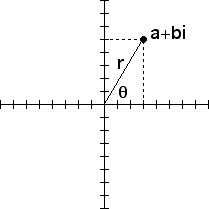

Complex numbers also can be represented using polar coordinates. From the picture, it is easy to see that
|  |
Addition of complex numbers has a simple interpretation using cartesian coordinates. We shall see multiplication has a simple interpretation using polar coordinates.
Suppose
The modulus of the product of two complex numbers is the product of their moduli:
|a + bi|*|c + di| = |(a + bi)*(c + di)|
Here is why.
| (a + bi)*(c + di) = (ac - bd) + (ad + bc)i |
| so |(a + bi)*(c + di)| = sqrt[(ac - bd)2 + (ad + bc)2] |
| = sqrt[a2c2 - 2abcd + b2d2 + a2d2 + 2abcd + b2c2] |
| = sqrt[a2c2 + b2d2 + a2d2 + b2c2] |
| = sqrt[a2(c2 + d2) + b2(c2 + d2)] |
| = sqrt[a2 + b2]*sqrt[c2 + d2] |
| = |a + bi|*|c + di| |
Finally, the argument of the sum of two complex numbers is the sum of their arguments.
Here is why.
| Suppose gamma is the argument of (a + bi)*(c + di) |
| Then tan(gamma) = (ad + bc)/(ac - bd) |
| Recall tan(theta + phi) = (tan(theta) + tan(phi))/(1 - tan(theta)*tan(phi)) |
| So tan(theta + phi) = ((b/a) + (d/c))/(1 - (b/a)*(d/c)) |
| = (ad + bc)/(ac - bd) |
| Being careful with signs, we see gamma = theta + phi. |
Summarizing:
To multiply two complex numbers, multiply the moduli and add the arguments.
Return to Samples.